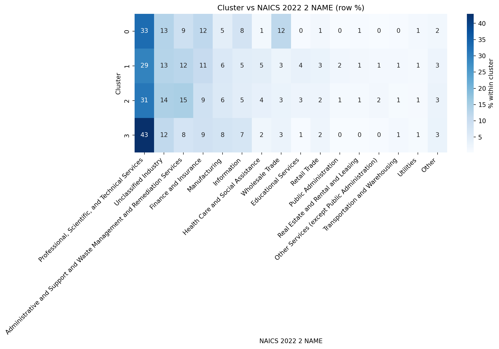

import os, reimport numpy as npimport pandas as pdimport matplotlib.pyplot as pltfrom sklearn.feature_extraction.text import TfidfVectorizerfrom sklearn.compose import ColumnTransformerfrom sklearn.pipeline import Pipelinefrom sklearn.preprocessing import OneHotEncoder, StandardScaler, FunctionTransformerfrom sklearn.impute import SimpleImputerfrom sklearn.cluster import KMeansfrom sklearn.metrics import silhouette_scoreos.makedirs("output", exist_ok=True)# Use your cleaned frame if present; else load CSVtry: df = raw_df.copy()exceptNameError: df = pd.read_csv("data/lightcast_job_postings.csv")# Pick a title/text column robustlyfor c in ["TITLE_CLEAN", "TITLE", "TITLE_NAME", "TITLE_RAW"]:if c in df.columns: text_col = cbreakelse:raiseValueError("No title column found (TITLE_CLEAN/TITLE/TITLE_NAME/TITLE_RAW).")# Coerce useful numerics if presentfor c in ["SALARY", "SALARY_FROM", "SALARY_TO", "MIN_YEARS_EXPERIENCE", "MAX_YEARS_EXPERIENCE", "DURATION"]:if c in df.columns: df[c] = pd.to_numeric(df[c], errors="coerce")# Candidate categoricals (kept if present & not too wide)candidate_cat = ["REMOTE_TYPE_NAME", "STATE_NAME", "EMPLOYMENT_TYPE_NAME","COMPANY_IS_STAFFING", "NAICS_2022_6_NAME", "ONET_NAME", "SOC_2021_5_NAME"]cat_cols = [c for c in candidate_cat if c in df.columns]cat_cols = [c for c in cat_cols if df[c].nunique(dropna=True) <=200]num_cols = [c for c in ["SALARY", "MIN_YEARS_EXPERIENCE", "MAX_YEARS_EXPERIENCE", "DURATION"] if c in df.columns]print("Using columns:")print(" text_col:", text_col)print(" cat_cols:", cat_cols)print(" num_cols:", num_cols)RANDOM_STATE =42
/var/folders/7j/ct705g296ls7nrjh30h9pyg40000gn/T/ipykernel_59075/3257818786.py:20: DtypeWarning:
Columns (19,30) have mixed types. Specify dtype option on import or set low_memory=False.
1 Helpers
def _clean_text_input(x):""" Accept Series, 1-col DataFrame, or numpy array from ColumnTransformer and return a plain Python list[str] with NaNs -> "". """ifisinstance(x, pd.Series): s = xelifisinstance(x, pd.DataFrame): s = x.iloc[:, 0]elifisinstance(x, np.ndarray): s = pd.Series(x.ravel())else: s = pd.Series(x) s = s.astype("string").fillna("")return s.tolist()# Handle OneHotEncoder API difference across sklearn versionstry: _ = OneHotEncoder(sparse_output=True) _OHE_KW = {"sparse_output": True}exceptTypeError: _OHE_KW = {"sparse": True}
import matplotlib.patches as mpatchesfrom matplotlib.ticker import FuncFormatter# Build dfc in-memory from assignmentsdfc = df_clusters.copy()# Detect AI terms on TITLETITLE_COL ="TITLE_CLEAN"if"TITLE_CLEAN"in dfc.columns else"TITLE"assert TITLE_COL in dfc.columns, "Need a TITLE or TITLE_CLEAN column in dfc."AI_TERMS = [r"\bAI\b", r"\bML\b", r"\bLLM\b", r"\bNLP\b","artificial intelligence", "machine learning", "deep learning","computer vision", "generative", "gen ai", "chatgpt", r"gpt-\d+","transformer", "bert", "prompt engineer", "reinforcement learning"]ai_pat = re.compile("|".join(AI_TERMS), flags=re.IGNORECASE)if"is_ai"notin dfc.columns: dfc["is_ai"] = dfc[TITLE_COL].astype(str).str.contains(ai_pat, na=False)# Colors per cluster idcluster_colors = {c: plt.cm.get_cmap("tab10")(i %10) for i, c inenumerate(sorted(dfc["cluster"].unique()))}# Human-friendly names (fallback to id if not mapped)cluster_names = {i: f"Cluster {i}"for i insorted(dfc["cluster"].unique())}dfc["cluster_name"] = dfc["cluster"].map(cluster_names)# Aggregate statsstats = ( dfc.groupby("cluster", as_index=False) .agg(postings=("cluster","size"), ai_share=("is_ai","mean"), median_salary=("SALARY","median")))stats["cluster_name"] = stats["cluster"].map(cluster_names)stats["label"] = stats.apply(lambda r: f"C{int(r.cluster)} — {r.cluster_name}", axis=1)stats["ai_share_pct"] = (stats["ai_share"] *100).round(1)stats["color"] = stats["cluster"].map(cluster_colors)# Legend/key (reusable)legend_handles = [ mpatches.Patch(color=cluster_colors[c], label=f"C{c}")for c insorted(stats["cluster"].unique())]# Plot 1: AI share by clusterdfp = stats.sort_values("ai_share_pct", ascending=True)plt.figure(figsize=(11, 4))plt.barh(dfp["label"], dfp["ai_share_pct"], color=dfp["color"])plt.title("AI Share by Cluster (% of postings with AI terms)")plt.xlabel("AI Share (%)")for y, v inenumerate(dfp["ai_share_pct"]): plt.text(v +0.5, y, f"{v:.1f}%", va="center")plt.legend(handles=legend_handles, title="Cluster Key", loc="lower right")plt.tight_layout()plt.savefig("output/cluster_ai_share.png", dpi=200, bbox_inches="tight")plt.show()# Plot 2: Median salary by clusterdfp = stats.sort_values("median_salary", ascending=True)plt.figure(figsize=(11, 4))plt.barh(dfp["label"], dfp["median_salary"], color=dfp["color"])plt.title("Median Salary by Cluster")plt.xlabel("Salary (USD)")plt.gca().xaxis.set_major_formatter(FuncFormatter(lambda x, pos: f"${int(x):,}"))for y, v inenumerate(dfp["median_salary"]):if pd.notnull(v): plt.text(v, y, f"${int(v):,}", va="center", ha="left", fontsize=9)plt.legend(handles=legend_handles, title="Cluster Key", loc="lower right")plt.tight_layout()plt.savefig("output/cluster_median_salary.png", dpi=200, bbox_inches="tight")plt.show()# Save tabular summarystats_out = stats[["cluster","cluster_name","postings","ai_share_pct","median_salary"]].sort_values("cluster")stats_out.to_csv("output/cluster_summary.csv", index=False)stats_out.head(10)
/var/folders/7j/ct705g296ls7nrjh30h9pyg40000gn/T/ipykernel_59075/2483979144.py:22: MatplotlibDeprecationWarning:
The get_cmap function was deprecated in Matplotlib 3.7 and will be removed in 3.11. Use ``matplotlib.colormaps[name]`` or ``matplotlib.colormaps.get_cmap()`` or ``pyplot.get_cmap()`` instead.
cluster
cluster_name
postings
ai_share_pct
median_salary
0
0
Cluster 0
1673
0.9
136400.0
1
1
Cluster 1
44869
1.0
97250.0
2
2
Cluster 2
12657
0.7
103500.0
3
3
Cluster 3
13299
1.1
162500.0
6 SVD 2D
from sklearn.decomposition import TruncatedSVDassert"X"inglobals(), "Feature matrix X missing."svd = TruncatedSVD(n_components=2, random_state=RANDOM_STATE)XY = svd.fit_transform(X)print("Explained variance (2 comps):", svd.explained_variance_ratio_.sum())
Explained variance (2 comps): 0.3385352006257032
7 Single Cluster Scatter
plt.figure(figsize=(9,6))for c insorted(np.unique(labels)): m = (labels == c) plt.scatter(XY[m,0], XY[m,1], s=8, alpha=0.5, color=cluster_colors[c], label=f"C{c}")plt.title("KMeans clusters (2-D SVD embedding)")plt.xlabel("SVD 1"); plt.ylabel("SVD 2")plt.legend(markerscale=2, frameon=True)plt.tight_layout()plt.savefig("output/kmeans_svd_scatter.png", dpi=180, bbox_inches="tight")plt.show()
Under the recommendation of the Kmeans Elbow and Silhouette measures, four clear segments have emerged. C0 (EA / SAP–Oracle Consulting, Sr) comprises enterprise solution owners and senior consultants focused on ERP/CRM integrations, domain architecture, and delivery roadmaps. C1 (Data / BI Analysts) is the high‑volume analytics backbone handling reporting, dashboards, and KPI/ad‑hoc analysis at mid‑career compensation. C2 (Enterprise / Cloud Architects) is the premium niche cluster with principals and leads who own cloud platforms, reliability/security, and cross‑team technical direction, and therefore command the highest pay. C3 (Data / BI Analysts, consulting tilt) mirrors C1’s skills but skews toward consulting and remote work and shows the highest AI‑keyword incidence, reflecting applied‑AI enablement inside analytics teams. Overall, analyst demand drives scale (C1/C3), enterprise solutioning provides the integration bench (C0), and cross‑platform leadership remains scarce and premium (C2).
import pandas as pd# Quick diagnostics for label visibilitycands = ["NAICS_2022_6_NAME","NAICS_2022_4_NAME","NAICS_2022_2_NAME","ONET_NAME","ONET_2019_NAME","SOC_2021_5_NAME","SOC_2021_3_NAME","SOC_2021_2_NAME",]diag = []for c in cands:if c in df.columns: s = df[c].astype("string") diag.append({"column": c,"non_null_share": s.notna().mean(),"n_unique_nonnull": s.dropna().nunique(),"top5": s.value_counts(dropna=True).head(5).index.tolist() })diag_df = pd.DataFrame(diag).sort_values(["n_unique_nonnull","non_null_share"], ascending=[False, False])print("Label candidates (more uniques is better):")display(diag_df)# --- Auto-pick with stronger uniqueness requirement ---# Prefer columns with decent coverage and at least 5–40 distinct valuesviable = diag_df[(diag_df["non_null_share"] >=0.40) & (diag_df["n_unique_nonnull"].between(5, 40))]iflen(viable): REF_COL = viable.iloc[0]["column"]else:# Fallback REF_COL = diag_df.iloc[0]["column"]print("Using reference label column:", REF_COL)
Label candidates (more uniques is better):
column
non_null_share
n_unique_nonnull
top5
0
NAICS_2022_6_NAME
0.999393
814
[Unclassified Industry, Custom Computer Progra...
1
NAICS_2022_4_NAME
0.999393
294
[Computer Systems Design and Related Services,...
2
NAICS_2022_2_NAME
0.999393
21
[Professional, Scientific, and Technical Servi...
3
ONET_NAME
0.999393
1
[Business Intelligence Analysts]
4
ONET_2019_NAME
0.999393
1
[Business Intelligence Analysts]
5
SOC_2021_5_NAME
0.999393
1
[Data Scientists]
6
SOC_2021_3_NAME
0.999393
1
[Mathematical Science Occupations]
7
SOC_2021_2_NAME
0.999393
1
[Computer and Mathematical Occupations]
Using reference label column: NAICS_2022_2_NAME
10 Heatmap plot
import numpy as np, pandas as pd, osimport matplotlib.pyplot as plttry:import seaborn as sns use_sns =TrueexceptException: use_sns =Falseos.makedirs("output", exist_ok=True)# Base clustered frameif"dfc"inglobals(): base = dfc.copy()elif"df_clusters"inglobals(): base = df_clusters.copy()else:raiseAssertionError("Run the KMeans chunk so dfc/df_clusters exist.")# Attach chosen reference label (aligned by row order)base["ref_label"] = df[REF_COL].astype("string").fillna("Unknown").values# Crosstab clusters x labelsct = pd.crosstab(base["cluster"], base["ref_label"])# Drop 'Unknown' column if presentif"Unknown"in ct.columns: ct = ct.drop(columns=["Unknown"])# Keep top N labels overall (bucket the rest)TOPN =15if ct.shape[1] > TOPN: keep = ct.sum(axis=0).sort_values(ascending=False).head(TOPN).index ct_reduced = ct[keep].copy() ct_reduced["Other"] = ct.drop(columns=keep).sum(axis=1)else: ct_reduced = ct# Remove empty rows (just in case)ct_reduced = ct_reduced.loc[ct_reduced.sum(axis=1) >0]# Convert to row percentagespct = ct_reduced.div(ct_reduced.sum(axis=1), axis=0) *100if pct.shape[1] <=1:print(f" {REF_COL} doesn’t have enough diversity after cleaning. "f"Try overriding REF_COL to something like NAICS_2022_4_NAME or ONET_NAME.")else: plt.figure(figsize=(max(10, 0.7*pct.shape[1]), max(4, 0.6*pct.shape[0])))if use_sns: ax = sns.heatmap(pct, cmap="Blues", annot=True, fmt=".0f", cbar_kws={"label": "% within cluster"})else: im = plt.imshow(pct.values, aspect="auto", cmap="Blues") plt.colorbar(im, label="% within cluster") plt.xticks(range(pct.shape[1]), pct.columns, rotation=45, ha="right") plt.yticks(range(pct.shape[0]), pct.index) ax = plt.gca() plt.title(f"Cluster vs {REF_COL} (row %)") plt.xlabel(REF_COL); plt.ylabel("Cluster") plt.tight_layout() plt.savefig("output/cluster_vs_reference_heatmap.png", dpi=200, bbox_inches="tight") plt.show()
/var/folders/7j/ct705g296ls7nrjh30h9pyg40000gn/T/ipykernel_59075/2086638697.py:62: UserWarning:
Tight layout not applied. The bottom and top margins cannot be made large enough to accommodate all Axes decorations.

This figure is a heatmap of job‑posting shares by industry, displayed as row percentages. The leftmost column— that includes Professional, Scientific & Technical Services, shows the darkest shading overall, meaning a large portion of postings in each row come from that industry, while lighter columns represent industries that account for a smaller share. The Profesional, Scientific, and Technical Services industry does seem to be the hottest job market based off of this dataset, however, this does not mean that it is necessarily driven by AI alone.
11 Kmeans Summary
The results point to a job market organized around four role families with one noticeably premium niche, and they suggest that compensation and hiring dynamics are driven more by seniority and enterprise scope than by AI keywords. Cluster C1 (Analyst & BI Core) supplies most of the volume (≈56%), centered on titles like data analyst, business analyst, and BI/analytics; it anchors day‑to‑day decision support and sits near the mid‑$110k median. Cluster C3 (Data Analyst & BI — Mixed/Remote, AI‑skewed) is a smaller analyst cohort with a stronger remote profile and the highest AI‑keyword incidence; it reflects applied‑AI enablement inside analytics teams and also prices around the mid‑$110k band. Cluster C0 (Enterprise Architecture & Solutions) blends architect/enterprise/SAP‑Oracle/consultant language and tilts toward cross‑system solution ownership—ERP/CRM modernization, integration roadmaps, and domain architecture—with compensation likewise clustering near the mid‑$110k range. Finally, Cluster C2 (Senior Enterprise/Cloud Leadership) is the small but premium niche (~7%) that stands apart both visually and economically, with a roughly $175k median in the provided charts; employers reward systems ownership, architectural accountability, reliability/security considerations, and cross‑team leadership, even when titles don’t carry explicit AI keywords. Meanwhile, AI‑tagged titles are increasing from a small base and are unevenly distributed—most common in C3 and least common in C2, yet the salary premium does not follow that same AI gradient, reinforcing that pay aligns with role family and enterprise scope rather than AI labeling. Industry composition across all clusters is anchored in Professional, Scientific & Technical Services, with steady contributions from Administrative & Support, Finance & Insurance, and Manufacturing. The fastest AI growth is occurring outside of pure software—holding companies, motor‑vehicle parts, R&D services, executive search, and temporary help which signals diffusion of AI demand into corporate centers and industrial supply chains. This suggests that an increased use of applied AI in operational workforces. Altogether, the evidence suggests a hybrid hiring mix: steady growth of applied‑AI roles embedded in analytics workflows (C1/C3), alongside continued scarcity and premium pricing for cross‑functional platform leaders (C2) who can translate strategy into architecture and delivery, with C0 providing the enterprise solutions bench that stitches systems and governance together. Although AI is a key component within this analysis, it does not necessarily mean that AI is overtaking the job industry and ‘destroying the job market’, but rather remodeling the job market and how we use technology within the workplace. AI is steadily contributing to industries such as Administrative & Support, Finance & Insurance, and Manufacturing, however, premium job postings with the highest salaries seem to still value human judgement and ability.